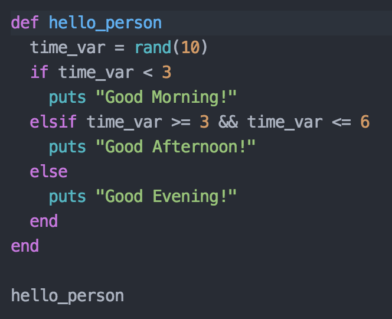
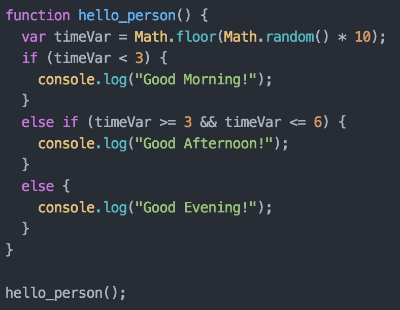

Ruby vs. JavaScript
Laid Back Experience vs. Coding Equivalent of the Grammar Police
Saturday, July 11, 2015
I feel that I must preface this post by saying that my experience so far with JavaScript has been mostly very positive, enjoyable, and rewarding. I managed to piece together a game that does more than just print out text and takes more input than just a single command line instruction. That being said, you really need to lighten up JS. Seriously, like, way too many symbols and such. You're kinda high maintenance.
Ruby, you are beautiful, elegant, forgiving, and very easy on the eyes. Even if I don't know the name of a method for certain, odds are I can take a guess and it will often be right or very close. You rarely demand strange symbols from me, and when you do it is usually because I am trying to be fancy and fit a bunch of code on a single line. You are also kind enough to run most of my code up until the point you find a mistake that I made. If I want to show some data on the console, you offer me numerous options for doing so, one that takes only a single letter (good old 'p').
Enough of this near nonsensical rambling. Let's just look at an example of code in both Ruby and JS so you can see what I am talking about:
  JavsScript, I hereby rename you SymbolScript. Perhaps Ja\/a$cr||)t due to your love of symbols. Anyway, you get my gripe from the above examples, yes? I even left some optional ones out! Yes, I added some that are potentially optional as well, but it only takes ten errors due to a missed semi-colon or curly brace to get you throwing them in at every chance.All complaining aside, JavaScript is still a wonderful language when you want to mess around with your webpage's CSS and HTML. Ruby also is a fantastic language that I have come to greatly enjoy. I look forward to working more with both of them in the future and hopefully getting over my symbol aversion.